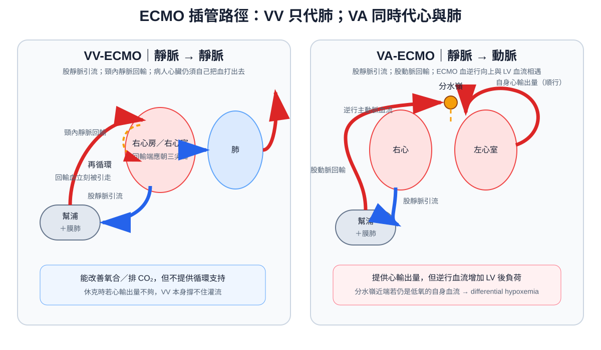

處置
ECMO ｜ 體外膜氧合（葉克膜） · Extracorporeal Membrane Oxygenation 筆記更新 2026-07-28· 整理狀態：可用
加入閱讀清單 其他名稱 8 ECMO · Extracorporeal membrane oxygenation · 葉克膜 · 體外膜氧合 · VV-ECMO · VA-ECMO · ECLS · ECPR
一句話總覽
把血引出體外、用膜肺換氣、再打回體內——它不治療任何疾病，只是買時間 。所以決定要不要上 ECMO 的問題永遠不是「病人現在多重」，而是**「這個病有沒有可逆的可能，或有沒有出路（恢復、手術、移植）」**。沒有出路的 ECMO 只是把死亡延長成一個沒有人敢關機的困局。
30 秒行動卡
最該記的適應症 ：VV ＝ 肺壞了（重度 ARDS ：P/F ＜50 ＞3 小時、P/F ＜80 ＞6 小時，或 pH ＜7.25 且 PaCO₂ ≥60 ＞6 小時）；VA ＝ 心臟壞了（心因性休克、無法脫離體外循環、ECPR）
做之前一定要確認 ：這個病可逆嗎？出路是什麼？ （恢復／手術／移植／或明確的撤除計畫）＋ 神經學狀態 ＋ 凝血功能
絕對不可 ：在不可逆且無出路 的病況上啟動；VA 股動脈插管而不評估遠端肢體灌流
原理與目的
flowchart TD
A["靜脈血引出<br/>離心幫浦"] --> B["膜肺<br/>加氧・排二氧化碳"]
B --> C{"打回哪裡"}
C -->|"回靜脈 VV"| D["只取代肺<br/>心臟自己打"]
C -->|"回動脈 VA"| E["同時取代心與肺<br/>提供心輸出量"]
D --> F["呼吸器可以調到<br/>極低設定 讓肺休息"]
E --> G["但左心室後負荷上升<br/>可能脹大"]
classDef good fill:#1b5e20,stroke:#0b3d0b,color:#fff,font-weight:bold
classDef bad fill:#8e0000,stroke:#5f0000,color:#fff,font-weight:bold
class F good
class G bad
筆記中的流程與關係 VV 與 VA 的差別只有一句話：血打回靜脈還是動脈
VV（靜脈→靜脈） ：氧合過的血回到右心房，仍然靠病人自己的心臟推出去 。因此不提供任何循環支持 ——病人若同時休克，VV 撐不住。
VA（靜脈→動脈） ：血直接打進主動脈，同時取代心與肺 ，但代價是逆行血流增加左心室後負荷 → 左心室脹大、肺水腫 ，可能需要 venting（IABP／Impella／中膈造口）。
判準：只有氧合的問題 → VV；有幫浦的問題 → VA。 選錯的典型後果是「重度 ARDS 合併休克只上 VV」或「單純呼吸衰竭卻上 VA，白白承擔血栓與肢體缺血風險」。
ECMO 真正的治療價值在於「讓肺休息」 ：上機後呼吸器可調到極低設定（低潮氣容積、低平原壓、低 FiO₂），切斷呼吸器誘發肺損傷的惡性循環 ——這才是它在 ARDS 降低死亡率的可能機轉，而不是把 PaO₂ 拉高本身。
適應症 Indications
型式
適應症
判斷閾值／時機
VV 重度 ARDS ：已做足肺保護通氣（含俯臥）仍失敗
EOLIA 收案條件 ：P/F ＜50 ＞3 小時｜P/F ＜80 ＞6 小時｜pH ＜7.25 且 PaCO₂ ≥60 ＞6 小時（呼吸次數已加到 35 且 Pplat ≤32）
VV 頑固性高碳酸血症、嚴重氣漏、支氣管肋膜瘻管
無法在可接受壓力下通氣時
VV 肺移植前橋接（bridge to transplant）
有移植資格 才成立——這就是「出路」
VA 心因性 Shock （急性心肌炎、大範圍 ACS 、藥物中毒、頑固性心律不整）
足量強心／升壓藥仍持續低灌流、乳酸高且器官衰竭進展。IABP 不是必經步驟 （IABP-SHOCK II 陰性後，AMI 併心因性休克常規用 IABP 已降為不建議）。猛爆性心肌炎預後最好（存活率約 55–78%），是最值得上的一群
VA 心臟手術後無法脫離體外循環
術中決策
VA（ECPR） 經篩選的心跳停止
病人選擇比技術重要 ：目擊、arrest→CPR ＜5 分鐘 、初始心律 VF/pVT（ELSO 亦納入 PEA）、arrest→上機 ＜60 分鐘 、年齡 ＜70 歲、CPR 中 EtCO₂ ＞10 mmHg 或有生命徵象／間歇 ROSC。條件不符時效益極差
VA 大量肺栓塞或高風險介入的圍術期支持
見 Pulmonary embolism
EOLIA 的結果要誠實記
60 天死亡率 ECMO 組 35% vs 對照組 46% ，p ＝ 0.09 未達統計顯著 ；但對照組有 28%（35/125） 因難治性低血氧跨組接受救援 ECMO（平均在第 6.5 天），稀釋了差異——這個 28% 就是「為什麼 p 值不顯著」的標準答案 。事後分析多半支持有效益。
2024 ATS 是「對選定的重度病人有條件建議、低證據等級」，ESICM 2023 卻給「強烈建議、中等證據等級」——兩大學會公開不一致，考題要看它問的是哪一本。 早年的 CESAR（2009）比較的是「轉到 ECMO 中心」而非 ECMO 本身（介入組僅 76% 真的上機，對照組只有 70% 接受肺保護通氣 vs 介入組 93%），證據力更弱。
一句話：ECMO 是「肺保護通氣＋俯臥都失敗之後」的選項，不是重度 ARDS 的第一步。
台灣本土：使用密度偏高，而這件事本身有爭議
台灣的 ECMO 使用強度在國際上明顯偏高（健保資料庫 2000–2010 年，年使用量由 52 例增至 1,045 例，適應症以心血管疾病 68.7% 為主），健保有給付但耗材與併發症成本高。該研究自己下的結論值得記住：使用量的成長與給付制度相關，而偏高的死亡率提示部分使用可能沒有帶來實質效益 。這正好呼應本篇的主軸——問題從來不是「能不能上」，而是「上了之後的出路是什麼」 。
術前準備與評估
項目
內容
最重要的一項 可逆性與出路評估 ——恢復？手術？移植？沒有任何一條時不該上機。這是決策，不是檢驗
神經學
上機前的意識與瞳孔紀錄；已知嚴重不可逆腦傷是禁忌
必查檢驗
CBC、PT/INR、aPTT、fibrinogen、D-dimer 、血型與備血、生化與乳酸、血液培養
影像／定位
超音波評估血管管徑與通暢度 ；Echocardiography （看心室功能決定 VV 或 VA、找主動脈剝離與嚴重主動脈瓣逆流）
抗凝準備
unfractionated heparin（見 Heparin↗ ）；確認有無 heparin-induced thrombocytopenia 病史
同意書
必須說明出血、中風、肢體缺血、感染，以及「可能無法脫機」這件事 ——家屬事前不知道撤除的可能性，是最常見的糾紛來源
團隊
灌流師、心臟外科或重症團隊、血庫；是否轉診到 ECMO 中心要早決定，不要等到血壓掉了才轉
操作概要
選型式 ：純氧合問題 → VV ；合併幫浦衰竭 → VA 插管 ：VV 常用股靜脈引流 ＋ 頸內靜脈回輸 ，或單一雙腔導管置於頸內靜脈；VA 常用股靜脈引流 ＋ 股動脈回輸 （周邊）或直接主動脈與右心房插管（中央，多為術中）VA 周邊插管務必同時放遠端灌流導管 ——股動脈被大口徑管子塞住，同側下肢會缺血（ELSO：可把下肢缺血率由 25.4% 降到 9.7% ）啟動 ：「血流量管氧合、掃氣流量管 CO₂」——這才是彼此獨立的兩個旋鈕 。氧合主要由 ECMO 血流量 決定（幫浦轉速，實質是「引流走的血佔心輸出量多少比例」）；CO₂ 排除由 sweep gas 流量 決定（等同膜肺的分鐘通氣量）。掃氣的 FiO₂ 通常固定在 1.0，調它幾乎沒有效果抗凝 ：靜脈 heparin 持續輸注，依 ACT 或 aPTT 調整；出血時可短暫停用上機後把呼吸器調到休息設定 ：低潮氣容積、低平原壓、低 FiO₂、適度 PEEP 維持肺不塌每日評估脫機 ：VV 看關掉 sweep gas 後自己的氣體交換；VA 看降流量時的心輸出量與 Echocardiography

VV 與 VA 的插管路徑對照：VV 的回輸端若太靠近引流端會發生再循環；周邊 VA 的股動脈回輸血沿主動脈逆行，與左心室順行血流形成分水嶺。自製示意圖。
併發症 Complications
併發症
何時出現
怎麼發現
怎麼處理
出血（最常見） 任何時候，插管處與消化道最常見
Hb 下降、插管處滲血、血便
降低抗凝目標、補 fibrinogen 與血小板、局部止血
顱內出血或梗塞 數小時至數天
瞳孔、鎮靜中斷評估、影像
預後最壞的併發症之一 ；立即停抗凝並評估撤除
acquired von Willebrand syndrome 上機數小時內 （剪切力使 vWF 高分子量多聚體流失，幾乎人人都有）黏膜出血、鼻出血、插管處持續滲血 ；靠 VWF:RCo/VWF:Ag ＜0.7 與多聚體分析降低剪切力、補 vWF 濃縮劑或 cryoprecipitate；脫機後可逆
溶血 數天
血漿游離血紅素上升、尿色變深、LDH 上升
檢查幫浦頭與管路血栓、調整流量
管路／膜肺血栓 數天
膜前後壓差上升、氧合效率下降、D-dimer 上升
更換膜肺或整套管路
同側下肢缺血（VA 股動脈） 數小時
肢體溫度、脈搏、顏色；筋膜室症候群
預防為主：放遠端灌流導管 ；已缺血需外科介入
Harlequin（南北）症候群｜differential hypoxia （VA 周邊）心功能回復、肺仍很差時
右手 SpO₂ 低於左手與下肢 ——上半身由自身心臟打出的缺氧血供應，分水嶺在主動脈弓。確診靠右橈動脈血氣 ，脈搏血氧只是篩檢先改善自身的肺（提高呼吸器 FiO₂/PEEP）→ 加一條靜脈回輸（VAV ）→ 改 VV → 或改腋／鎖骨下動脈回輸
左心室脹大與肺水腫 （VA）數小時至數天
脈壓變窄、超音波看到左心室不動且脹、肺水腫惡化（嚴重時肺出血）
venting ：IABP、Impella、中膈造口
再循環（VV） 上機後隨時
引流血過紅、膜前血氧偏高但病人仍低血氧
調整插管位置與流量
感染、Acute kidney injury 、heparin-induced thrombocytopenia 數天
培養、尿量與 Cr、血小板下降
對症處理；HIT 改用非 heparin 類抗凝
術後監測
要盯的
頻率
異常閾值
右上肢 SpO₂ 與動脈血氣 （VA）持續
右手低於下肢 → Harlequin ，代表上半身在缺氧
幫浦流量與轉速、管路抖動（chattering）
持續
流量掉、管路抖 → 容積不足或引流管貼壁
膜前後壓差、膜後血氧
每班
壓差上升、氧合下降 → 膜肺血栓，準備換膜
ACT／aPTT、血小板、fibrinogen、血漿游離血紅素
每 4–6 小時至每日
依出血與血栓風險動態調整
雙下肢脈搏、溫度、顏色 （VA 周邊）每班
任何不對稱 → 立即處理遠端灌流
神經學評估（每日中斷鎮靜）
每日
新出現的局灶症狀 → 立即影像
呼吸器設定與胸部影像
每日
確認確實維持在「肺休息」設定
脫機可能性與家庭會議 每日
上機後就要開始談出路與界線 ，不是等到走不下去才談
禁忌與陷阱
絕對不可
情境
絕對不可
為什麼
該做什麼
不可逆病況且無出路 （末期惡性腫瘤、末期肺纖維化但無移植資格、嚴重不可逆腦傷）啟動 ECMO
只能延長瀕死，且事後撤除極其困難
安寧與家庭會議；上機前就要定義撤除條件
急性主動脈剝離且牽涉主要分支、尚未手術 ；或重度主動脈瓣逆流而預期左心室幾乎不會打 上周邊 VA -ECMO
逆行血流灌進假腔；逆流灌爆不打的左心室
先影像確認；改中央或腋動脈插管、或其他支持。⚠ 剝離術後 反而是腋動脈回輸 VA-ECMO 的適應症之一，別記成「剝離一律不可」
VA 股動脈插管
不放遠端灌流導管 、不查下肢脈搏
同側肢體缺血甚至截肢
常規放置並每班評估雙下肢
心跳停止而無目擊、無旁觀者 CPR、低血流時間長
為了「盡力」而上 ECPR
神經學預後極差
依 ECPR 收案條件篩選（＜5 分鐘開始 CPR、＜60 分鐘上機）
已知 heparin-induced thrombocytopenia
繼續用 heparin 抗凝
血栓惡化
改非 heparin 類：bivalirudin （目前 ECMO 上最常用）或 argatroban
重度 ARDS 而尚未做足肺保護通氣與俯臥
直接上 ECMO
跳過已證實有效、風險遠低的介入
先 6 mL/kg PBW ＋ Pplat ≤30 ＋ 俯臥 ≥16 小時（見 ARDS ）
VA 上機後左心室不打、脈壓變窄只顧衝高流量
後負荷上升 → 左心室脹大、肺水腫
venting （IABP／Impella／中膈造口）
活動性大出血或近期顱內出血
用常規抗凝目標
致命出血
降低甚至暫停抗凝（相對禁忌，不是絕對 ——現代管路可短時間無抗凝運轉）
常見錯誤
把 ECMO 當治療 ——它不治病，只換時間。沒有出路就不該啟動 ，這句話比任何參數都重要。重度 ARDS 合併休克卻選 VV ——VV 完全不提供循環支持。VA 病人只看左手或下肢血氧 ——要看右上肢 ，那裡才反映腦部拿到的是哪一種血。VV-ECMO 病人低血氧就去調高掃氣 FiO₂ ——膜後血早已飽和，正確動作是提高 ECMO 血流量 ；高碳酸血症才調 sweep gas 流量。把「氧合變漂亮」當成病情好轉 ——ECMO 一定會讓數字變好看，肺本身可能毫無進展。把 IABP 當成上 VA-ECMO 前的必經步驟 ——IABP-SHOCK II 之後它已不是常規。上機時才第一次跟家屬談撤除的可能 ——同意過程就該說明「可能無法脫機」。跳過俯臥直接上 ECMO ——俯臥的死亡率效益比 ECMO 的證據更強、成本更低。
相關連結
SOURCE & CONTEXT
來源與原始筆記 EOLIA（2018 NEJM，VV-ECMO 於重度 [[ARDS]]）；CESAR（2009）；2024 ATS ARDS 指引（對選定重度 ARDS 有條件建議 VV-ECMO，ESICM 2023 則為強烈建議）；ELSO 2021 成人 VA-ECMO 指引與 ECPR 共識；Harrison's
下載這篇 Markdown ↗ 網站保留原筆記的內容與整理狀態。